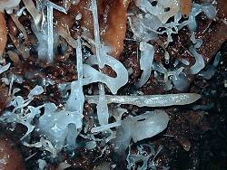

Jenolan Caves
|  |
Image: clear blue helictites in front of red speleothems.
huge patches of the cave wall are covered with this speleothems.
 Temple of Baal Cave. Temple of Baal Cave.
|
{kind=link}
The Jenolan Caves lie to the southwest of the Blue Mountains. They are located in a 2,416 hectare reserve for plants and wildlife. There are many Caves in New South Wales but this are the most famous.
There are nine caves available for public viewing:
 Cerberus Cave
Cerberus Cave- Chifley Cave
- Imperial Cave
- Jubilee Cave
- Lucas Cave
- Nettle Cave
- Orient Cave
- Ribbon Cave
- River Cave
- Temple of Baal Cave
The center of Jenolan is the area around Blue Lake with the
natural bridges
Grand Arch and Carlotta Arch.
The third natural bridge is the
Devil's Coach House.
Very interesting is a living fossil, a blind white shrimp, found in Jenolan Caves.
In 2006 the age of cave sediments was determined by geophysical methods, and an age of 340 Million years was found. This makes the Jenolan caves by far the oldest caves of the world. The second oldest cave, located in the Guadelupe Mountains in New Mexico, U.S.A., is 65 million years old. Most caves are (only) up to 5 million years old.
History
 |
| Image: clear helictites in front of the red cave wall.
Temple of Baal Cave.
|
| 1838 | discovered by James Whalan. | |
| 1838 | Charles Whalan and his two sons unofficial keepers. | |
| 1867 | N.S.W. State Government took control, Jeremiah Wilson first official keeper. |
In 1838 James McKeown, an escaped convict, robbed Blue Mountain settlers. James Whalan, one of the victims, decided to track and find McKeown's hideout. He followed him more than 30km into unexplored mountain country. Then he saw a hidden valley through a huge rock archway.
Whalan told later: "I felt I had entered the Devil's Coachhouse".
This sentence lead to the name of the huge natural bridge nowadays called
Devil's Coach House.
He found remains of James McKeown and returned the
following day with troopers who arrested him.
On this day Charles Whalan (the brother of James Whalan) and his two sons where also with the the
party.
They became the first caretakers of the caves and made numerous discoveries.
The year 1838 is the official date of discovery. But as James McKeown used this area as hideout, he has discovered it earlier. And of course the Aboriginies knew the caves for a very long time and called the area Binoomea, meaning dark places.
- See also
 Member of the International Show Caves Association (ISCA)
Member of the International Show Caves Association (ISCA) Search Google for "Jenolan Caves"
Search Google for "Jenolan Caves" Jenolan Caves - Wikipedia, the free encyclopedia
Jenolan Caves - Wikipedia, the free encyclopedia Jenolan Caves,
official website.
Jenolan Caves,
official website.- Gateway to Jenolan Caves
- School Projects
- Blue Mountains Attractions
- Jenolan Caves
- Jenolan Historical Summary,
a great timeline for Jenolan, very detailed.